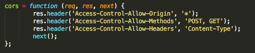
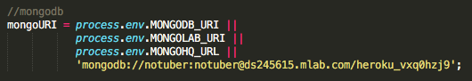
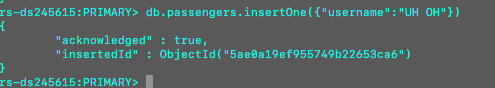
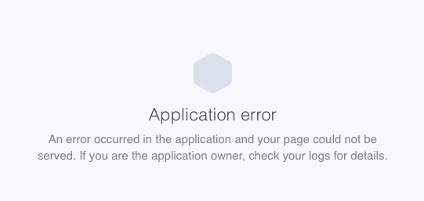

Introduction
The goal of this task was to find security flaws in a fellow student's NOTUBER application built through heroku.
Methodology
The first thing that I tried was to look for sanatation errors. Unfortunately, there were none to be found. The next thing that I worked with was the source code for the app to see if there was a flaw that I could take advantage of through there. I didn't end up using any outside tools.
Abstract of Findings
In the source code, the username and password for the MongoDB database were included. Because of this I was directly able to access the databases. Although I could have done pretty much anything I wanted to the databases including deleting them and changing the number of fields, etc. I choose to start by simply insert invalid input, which crashed the app.
Issues Found
Issue 1
- Issue: Allowing '*' for CORS.
- Location: Source code (affects all pages).
- Severity: I would say this is high because anyone can get access to the data presented on the page. This is problematic because the website contains information about users locations at specific times.
- Description: Error was found by looking through source code.
- 
- Resolution: Only allow specific types of access to the server, but not all.
Issue 2
- Issue: Including the username and password in the source code.
- Location: Source code (affects all pages).
- Severity: I would say this is high becuase giving access to your databases and allowing for anyone with the code to access them is probably not a good idea if there was more senstiive information in it (although locations are not great either).
- Description: Error was found by checking out set up of database.
- 
- Resolution: The username and password just doesn't have to be included in the code. A simply localhost would work as the final setup for the database as well.
Issue 3
- Issue: Using the shell to insert information directly to the db breaks the application.
- Location: All pages of the app.
- Severity: I would say this is high because the app no longer functions when this is done.
- Description: Error was found by inputting invalid input through the shell.
- 

- Resolution: This issue stems from allowing the user access to the information to the database, so it could be resolved by not including the username/password in the source code.
Conclusion
Generally I would say that the input for this website was sanatized well and since we have not learned many other ways of breaking the code, I think he did a good job with this project. As most of my methods of breaking the app came from the source code, it can definitely be said that having access to the code gives away a lot of information. Asige from taking away the given information about the database to the user, I'm not really sure what could make this better due to my limited knowledge of security.
References